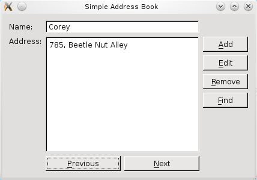
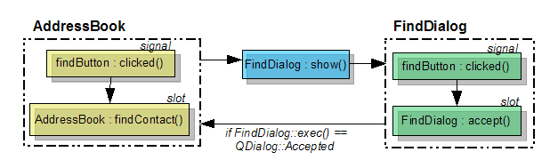
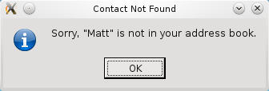

Часть 5 - Добавляем функцию поискаФайлы:
Здесь мы рассмотрим способы поиска контактов и адресов в адресной книге.  Так как мы добавили контакты в нашу адресную книгу, становится утомительным перемещаться по списку с помощью кнопок Next и Previous. Функция Find будет более эффективна. На приведенном ниже снимке экрана показана кнопка Find и ее расположение на панели кнопок. Когда пользователь щёлкает по кнопке Find, полезно вывести на экран диалог, в котором пользователь сможет ввести имя контакта. Qt предоставляет класс QDialog, подкласс которого мы создадим здесь для реализации класса FindDialog. Объявление класса FindDialogДля того, чтобы создать подкласс QDialog мы сначала включаем заголовочный файл QDialog в файл finddialog.h. Также мы используем опережающее определение для классов QLineEdit и QPushButton, так как мы будем использовать эти виджеты в нашем классе диалога. Поскольку в нашем классе AddressBook класс FindDialog включает в себя макрос Q_OBJECT, а его конструктор объявлен так, чтобы даже если диалог будет открыт как отдельное окно принимать родителя - QWidget. #include <QDialog>
class QLineEdit;
class QPushButton;
class FindDialog : public QDialog
{
Q_OBJECT
public:
FindDialog(QWidget *parent = 0);
QString getFindText();
public slots:
void findClicked();
private:
QPushButton *findButton;
QLineEdit *lineEdit;
QString findText;
};
Мы определяем открытую функцию getFindText(), которая будет использована классами, создают FindDialog. Эта функция позволит этим классам получать строку поиска, вводимую пользователем. Открытый слот findClicked() также объявлен для обработки строки поиска когда пользователь щелкает по кнопке Find. В заключение мы объявляем закрытые переменные, findButton, lineEdit и findText, соответствующие кнопке Find, строке редактирования, в которой пользователь вводит строку поиска, и внутренней строке, в которой сохраняется строка поиска для дальнейшего использования. Реализация класса FindDialogВнутри конструктора FindDialog мы устанавливаем закрытые переменные lineEdit, findButton и findText. Для расположения виджетов мы используем QHBoxLayout. FindDialog::FindDialog(QWidget *parent)
: QDialog(parent)
{
QLabel *findLabel = new QLabel(tr("Enter the name of a contact:"));
lineEdit = new QLineEdit;
findButton = new QPushButton(tr("&Find"));
findText = "";
QHBoxLayout *layout = new QHBoxLayout;
layout->addWidget(findLabel);
layout->addWidget(lineEdit);
layout->addWidget(findButton);
setLayout(layout);
setWindowTitle(tr("Find a Contact"));
connect(findButton, SIGNAL(clicked()), this, SLOT(findClicked()));
connect(findButton, SIGNAL(clicked()), this, SLOT(accept()));
}
Мы установили компоновку и заголовок окна, а также соединили сигналы с соответствующими им слотами. Уведомляем, что сигнал findButton'а - clicked() - соединяется с findClicked() и accept(). Слот accept(), предоставляемый QDialog, скрывает диалог и устанавливает код результат равным Accepted. Мы используем эту функцию чтобы помочь функции AddressBook'а - findContact() - узнать, когда будет закрыт объект FindDialog. Мы объясним эту логику в дальнейших подробностях при обсуждении функции findContact().  В функции findClicked() мы проверяем lineEdit чтобы убедиться, что пользователь не щелкнул по кнопке Find при не введенном имени контакта. Затем мы устанавливаем findText равным строке поиска, извлеченной из lineEdit. После этого мы очищаем содержимое lineEdit и скрываем диалог. void FindDialog::findClicked()
{
QString text = lineEdit->text();
if (text.isEmpty()) {
QMessageBox::information(this, tr("Empty Field"),
tr("Please enter a name."));
return;
} else {
findText = text;
lineEdit->clear();
hide();
}
}
С переменной findText связана функция установки значения getFindText(). Так как мы только установили findText непосредственно и в конструкторе и в функции findClicked(), то мы не создаем функцию получения значения для сопровождения getFindText(). Так как getFindText() - открытая функция, классы создающие объекты и использующие FindDialog могут всегда получить доступ к строке поиска, введенной и подтвержденной пользователем. QString FindDialog::getFindText()
{
return findText;
}
Определение класса AddressBookЧтобы обезопасить себя мы можем использовать FindDialog изнутри нашего класса AddressBook, мы включили finddialog.h в файл addressbook.h. #include "finddialog.h" До настоящего времени все функции нашей адресной книги имеют кнопку QPushButton и соответствующий слот. Подобным образом для функции Find мы имеем findButton и findContact(). findButton объявлена как закрытая переменная, а функция findContact() объявлена как открытый слот. void findContact();
...
QPushButton *findButton;
В заключение, мы объявили закрытую переменную dialog, которая будет использоваться для ссылки на объект класса FindDialog. FindDialog *dialog; Раз уж мы создали экземпляр объекта диалога, мы захотим использовать его более чем один раз; использование закрытой переменной позволяет нам ссылаться на нее из более чем одного места класса. Реализация класса AddressBookВнутри конструктора класса AddressBook мы создаем экземпляры закрытых объектов findButton и findDialog: findButton = new QPushButton(tr("&Find"));
findButton->setEnabled(false);
...
dialog = new FindDialog;
Затем мы соединяем сигнал findButton'а - clicked() - с findContact(). connect(findButton, SIGNAL(clicked()), this, SLOT(findContact())); Теперь все, что осталось - код нашей функции findContact(): void AddressBook::findContact()
{
dialog->show();
if (dialog->exec() == QDialog::Accepted) {
QString contactName = dialog->getFindText();
if (contacts.contains(contactName)) {
nameLine->setText(contactName);
addressText->setText(contacts.value(contactName));
} else {
QMessageBox::information(this, tr("Contact Not Found"),
tr("Sorry, \"%1\" is not in your address book.").arg(contactName));
return;
}
}
updateInterface(NavigationMode);
}
Мы начинаем с вывода на экран экземпляра класса FindDialog, dialog. Это происходит тогда, когда пользователь вводит имя искомого контакта. Как только пользователь щелкнул по кнопке диалога findButton, диалог скрывается и код результат устанавливается равным QDialog::Accepted. Это гарантирует, что наш оператор if всегда равен true. Затем мы извлекаем строку поиска, которая в данном случае равна contactName, используя функцию FindDialog'а - getFindText(). Если контакт существует в нашей адресной книге, то мы немедленно выводим его на экран. В противном случае, чтобы показать неудачу поиска мы выводим на экран показанное ниже окно сообщения QMessageBox.  X
|
|
Попытка перевода Qt документации. Если есть желание присоединиться, или если есть замечания или пожелания, то заходите на форум: Перевод Qt документации на русский язык... Люди внесшие вклад в перевод: Команда переводчиков |